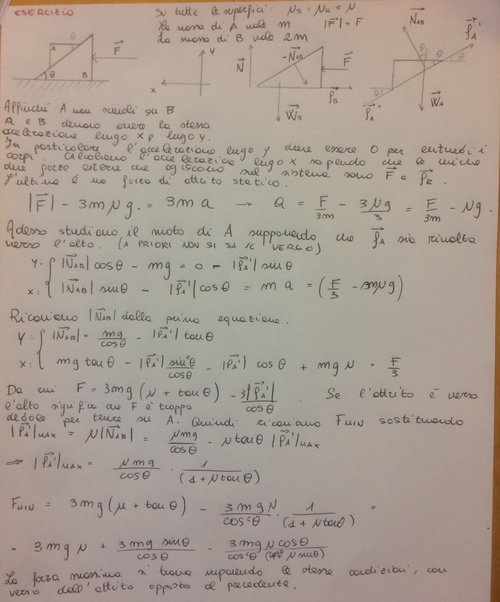

nicarepo18 dic 2018, 12:40
Il risultato per caso è:
\(3gm \mu + \frac{3mg sin (\theta)}{cos( \theta) + \mu sin (\theta)} - \frac{3mg \mu cos(\theta)}{cos( \theta) + \mu sin( \theta)} \le F \le 3gm \mu + \frac{3mg sin (\theta)}{cos \theta - \mu sin (\theta)} + \frac{3mg \mu cos(\theta)}{cos (\theta) - \mu sin (\theta)}\)
lance0020 dic 2018, 19:23
anche a me viene come a nicarepo... trovo che
\(\frac{g(sin \theta -\mu cos\theta)}{\mu sin\theta +cos\theta} \leq a \leq \frac{g(\mu cos\theta + sin\theta)}{cos\theta - \mu sin\theta}\) :? :?
nicarepo20 dic 2018, 21:13
Ah bene! Mi puoi dire come si mettono le immagini'?
nicarepo20 dic 2018, 21:31

-
Allegati
-

- IMG-1482 (1) (1).jpg (107.04 KiB) Visto 10034 volte
nicarepo20 dic 2018, 21:32
Waw bellissimo! Grazie! Comunque risistemando le formule trigonometriche torna il risultato di sopra :D